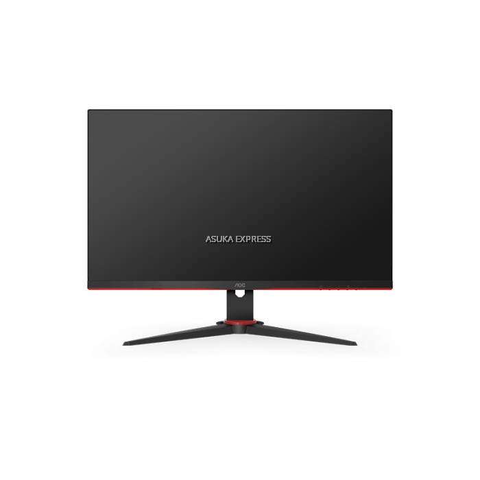
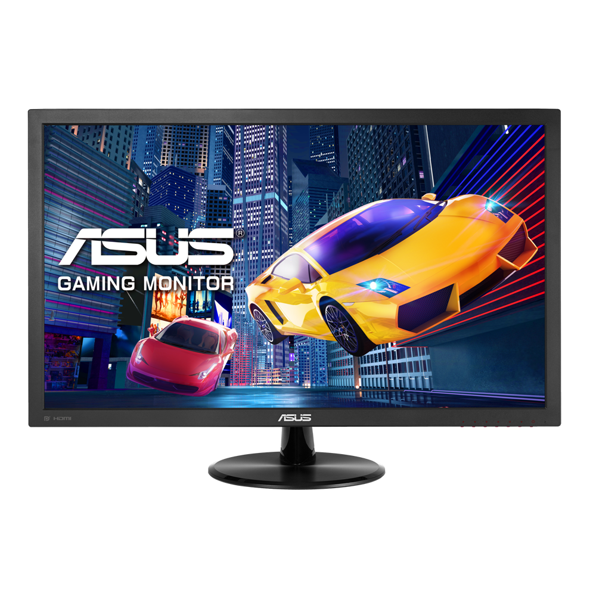
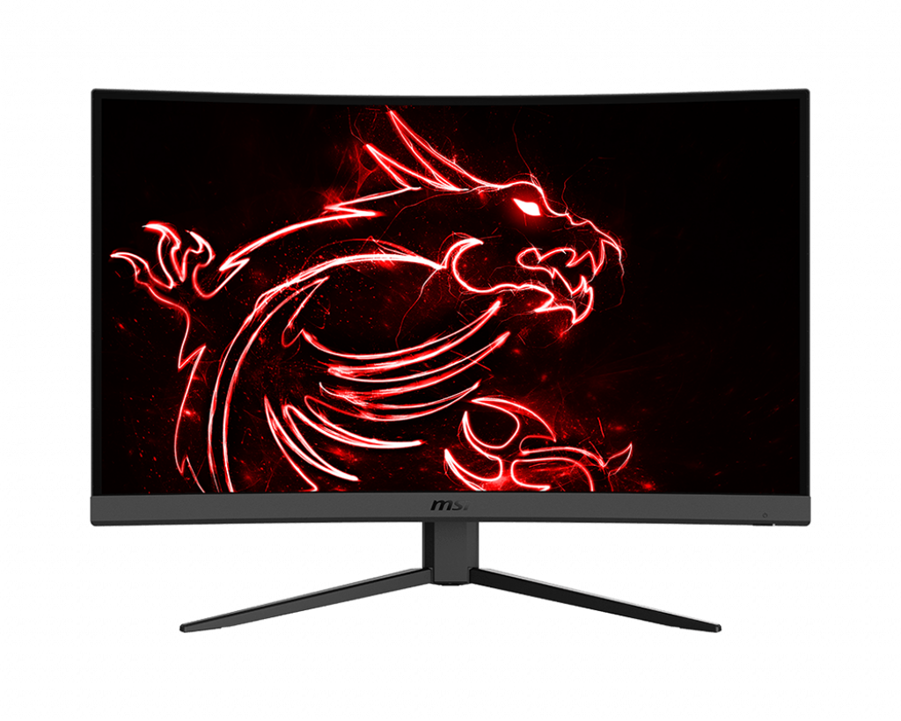

Monitor is the display used to do work on a PC.
Key Features:
- Resolution:
This refers to the amount of pixels in the display. In general, bigger number equals better display. The most common resolution is Full HD or 1920 x 1080 for general use, however there are bigger resolution such as 4k and above. It is important to note that when choosing a resolution, the processors can handle the workload. - Refresh rate:
This refers to how often the display updates the screen. For general use 60 Hz is enough. For gaming, 144 Hz is recommended. - Size:
This refers to the size of the display measured diagonally. For general use and professional use, 22-32 inch should be enough. For gaming, it is up to your budget and the type of game you want to play as it can get up to 50 inch or more. - Type:
This refers to the type of panel the display uses (TN/VA/IPS). TN monitors are the fastest but cheapest, due to poorer image quality when viewing from a side angle. IPS monitors have slightly faster response times and show color better than VA panels, but VA monitors have the best contrast out of all three panel types. For professional uses, IPS is recommended for its viewing angle and colors. For gaming, TN is recommended for its fast response times and refresh rate.



Click on the links down below to check out the pricing and other details of the monitors